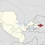

O`zbekiston Respublikasi |
|
| Andijon |
Andijon
|
| Buhoro | |
| Fargona | |
| Jizzah | |
| Horazim | |
| Namangan | |
| Navoiy | |
| Qashqadaryo | |
| Qoraqalpog`iston Respublikasi | |
| Samarqand | |
| Sirdaryo | |
| Surhandaryo | |
| Toshkent shahar | |
| Toshkent viloyati | |
Andijon viloyati — Oʻzbekiston Respublikasi tarkibidagi viloyat. Fargʻona vodiysining sharqiy qismida. 1941-yil 6-martda tashkil etilgan. Maydoni 4,2 ming km². Aholisi 3 253 501 kishi (2022-yil 1-yanvar holatiga). Andijon viloyatida 14 qishloq tuman, 11 shahar va 95 qishloq fuqarolari yigʻini bor (2000). Markazi — Andijon shahri.[2]
Tabiati Andijon viloyati yer yuzasi asosan tekislik. Hozirgi relyefi va yer yuzasidagi jinslar toʻrtlamchi geologik davrning katta-kichik daryolari va irmoqlarining faoliyatidan hosil boʻlgan. Viloyatning gʻarbiy qismi qirli tekislik (bal. 400-500 m), sharqi (Andijon shahridan sharda) Fargʻona va Oloy tizmalarining tarmoqlaridan iborat. Andijon viloyati geologik aktiv zonada joylashgan, kuchli zilzilalar boʻlib turadi (qarang Andijon zilzilasi). Iqlimi keskin kontinental, quruq. Togʻ tizmalari Fargʻona vodiysini sovuq havoning kirib kelishidan toʻsib turganligi uchun qishda Andijon viloyatida ob-havo birmuncha barqaror. Yozi issiq, iyulning oʻrtacha temperaturasi 27,3°, qishi nisbatan sovuq, yanvarning oʻrtacha temperaturasi −3°. Vegetatsiya davri 217 kun. Yiliga 200 — 250 mm yogʻin tushadi. Av. Oʻzbekistonning boshqa viloyatlariga nisbatan suv resurslariga boy. Daryolari yogʻindan, togʻlardagi koʻp yillik qor va muzliklardan suv oladi. Asosiy daryosi — Qoradaryo (Sirdaryo irmoqlaridan biri). Uning irmoqlari — Moylisuv, Oqboʻra, Aravonsoy va boshqa Av. daryolarining suvi sugʻorish uchun ishlatiladi. Tuproqlari boʻz, qoʻngʻir, oʻtloqi, oʻtloqi-botqoq tuproqlar, qumtosh, mergel, less va chaqirtoshlardan iborat. Bahorda adirlar efemer oʻsimliklar bilan qoplanadi. Av.ning ekin ekilmaydigan tekislik qismida shuvoq-shoʻra oʻsimliklari, togʻ yon bagʻirlarida pista, bodom oʻsadi. Yovvoyi hayvonlar (buri, tulki, qobon va boshqalar) kam uchraydi; sudraluvchilar, kemiruvchilar, qushlar, suv havzalarida baliqlar bor.
Aholisining koʻpchiligini oʻzbeklar tashkil etadi. Qirgʻizlar, Tojiklar, Uygʻurlar, Ruslar, Koreyslar, Qangli va boshqalar ham bor. Rossiya Qoʻqon xonligini bosib olgach, bu yerga rus, ukrain, tatar, arman, yahudiy va boshqa millat vakillari koʻchib kelgan. 1 km² ga oʻrtacha 517 kishi toʻgʻri keladi. Milliy tarkibi: oʻzbeklar — 86,8 %, qirgʻizlar 3,8 %, tatarlar 3,1 %, Qanglilar 2%, ruslar 2 %. Shaharliklar 657,7 ming kishi, qishloq aholisi 1539,2 ming kishi (2000).
Qishloq xoʻjaligi Viloyat qishloq xoʻjaligining asosiy tarmogʻi — paxtachilikdir. Paxtaning yalpi hosili va hosildorligi jihatidan Andijon viloyati mamlakatda oldingi oʻrinlarda turadi. Ayniqsa mustaqillikdan keyin paxtakorga erkinlik berilgach, paxtachilikda tub oʻzgarishlar sodir boʻldi. 1997-yildan chigitni keng maydonlarda plyonka ostiga ekish texnologiyasi joriy etildi (mazkur texnologiyani qoʻllashda viloyat hokimi, Oʻzbekiston Qahramoni Qobiljon Obidov katta jonbozlik koʻrsatdi). Paxta, gʻalla almashlab ekilishi yoʻlga qoʻyildi. Faqat mineral oʻgʻitlarga qarab qolmasdan mahalliy oʻgʻitlardan ham foydalanildi. Xususan gidroliz zavodining chiqindilaridan kompost tayyorlab, tuproq unumdorligini oshirishga ahamiyat berildi; ekin qator oralariga ammiak suvi oqizish oʻzlashtirildi. Gʻoʻza navlarini tuproq va iqlim sharoitiga koʻra tanlashga eʼtibor berildi. Har yili katta maydonlarda paxtaning „Oqdaryo“, „Armugʻon“, „Fargʻona-5“ singari istiqbolli navlari sinab koʻrildi va muntazam yangilanib borildi. Keyingi yillarda sinovdan oʻtib, ertapishar, tolasi pishiq, chigiti toʻla, kasalliklarga chidamliligiga ishonch hosil qilingan „Okdaryo“ navi koʻproq ekildi. Natijada mamlakatning boshqa viloyatlariga qaraganda gʻoʻza Andijon viloyatida barvaqt yetilmoqda. Sentabr oyiga qadar hosilning asosiy qismi yigʻib olinmoqda va yuqori navlarga oʻtkazilmoqda. 2000-yilda Oltinkoʻl tumanidagi „Ittifoq“ jamoa xoʻjaligida gektaridan oʻrtacha 45,7 s, Asaka tumanidagi „Yangi hayot“ jamoa xoʻjaligida 48,4 s atrofida hosil olindi. Shahrixon tumanidagi Gʻ. Joʻrayev nomidagi jamoa xoʻjaligining fermeri N. Toshmatov 60 sdan xirmon uydi. Andijon viloyatida 2000-yilda sentabr oyidayoq 305 ming tdan ziyod paxta tayyorlanib, shartnoma rejasi mamlakatda birinchi boʻlib bajarildi. Gʻallachilikda ham „Andijon maktabi“ yaratildi. Don 3 barobar koʻpayib, hosildorlik 1,2-marta oshdi. 2000-yilda gʻalla hosildorligi moʻljaldagi 70,8 sdan oshib ketdi. Marhamat tumanining Ulugʻtogʻ adirlarida Oxunboboyev nomidagi jamoa xoʻjaligining ijarachisi Muhammadsharif Toshpoʻlatov 67 s dan, Baliqchidagi Xayrixon Ergasheva nomidagi shirkat xoʻjaligida ijarachilardan Erkinboy Shukurov, Alijon Komilov, Turobjon Hakimov 85 sdan don olishdi. Shahrixon tumanidagi „Oltin vodiy“ jamoa xoʻjaligi gʻallachilik brigadasi boshligʻi Oʻzbekiston Qahramoni Sodiqjon Abdurasulov uzoq yillar davomida donchilikda va paxtachilikda yuqori koʻrsatkichlarga erishdi. U Andijon viloyatida boshqa mintaqalardan keltirilgan yangi bugʻdoy navlarini sinash va ulardan moʻl hosil olish boʻyicha tajriba maktabi yaratdi. 2000-yil hosili uchun viloyatda 74 ming ga maydonga elita va superelita urugʻlari ekildi. Kuzgi bugʻdoyning istiqbolli „Andijon-1“, „Andijon-2“, „Chillaki“ navlari sinab koʻrilib, ularning parvarish tartibi aniqlab chiqildi. Keyingi yillarda boshqa viloyatlarda ham andijonliklar yaratgan yangi navlar keng ekilmoqda. 2000-yilda davlatga 250 ming t ga yaqin gʻalla topshirildi. Uning 150 ming t sidan ziyodini sara urugʻlik tashkil etadi. Gʻallachilik 1999-yilda Andijon viloyatiga 9,3 mlrd. soʻmdan ortiq daromad keltirdi. (1994-yil yanvarda bosh Asaka avtomobil zavodidan chiqqan yangi avtomobillar. Oʻzbekiston Respublikasi Prezidenti Islom Karimov Asaka avtomobil zavodila, 1996-yil 19-iyul. Qishloq xoʻjalikda, shuningdek bogʻdorchilik, tokchilik, sabzavotchilik, don va chorvachilik mahsulotlari yetishtirish bilan ham shugʻullaniladi. Bogʻdorchilikda Andijon viloyati anor, anjir, bodom, behi, nok, shaftoli, olma, uzum yetishtirish bilan ayniqsa mashhur. Viloyatda aholi soni koʻpligi sababli adirlarda bogʻlar yaratishga katta ahamiyat berilgan. Shunday bogʻlardan eng mashhuri „Sohibkor“ meva-tokchilik ishlab chiqarish shirkatlar uyushmasi bogʻidir. Mazkur bogʻ 1981-yilda, Asaka tumanidagi Fayziobod qishlogʻidan 3-4 km narida Asaka adirlarining suvsiz qovjirab yotgan yerlari bagʻrida pastdan quvur orqali suv chiqaribyara-tilgan. Bogʻning barpo etilishi Oʻzbekistonda xizmat koʻrsatgan qishloq xoʻjalik xodimi Tilavoldi Yoqubov nomi bilan bogʻliq. Andijon viloyati bogʻlarida mevali daraxtlardan tashqari toknint Andijon kora uzu mi navi keng ekiladi. Qishloq xujalikda foydaniladigan yerlar maydoni tomorqa yerlarini qoʻshgan holda 256,7 ming ga. Qishloq xujalik ekinlari ekiladigan jami yerlari 257,6 ming ga, shu jumladan haydaladigan yer 200,9 ming ga, yaylovlar 21,7 ming ga (2000). Barcha ekin maydoni 202,5 ming ga, shu jumladan don ekinlari 82,5 ming ga, paxta ekiladigan yer PO ming ga, kartoshka, sabzavot-poliz ekinlari 4,9 ming ga, ozuqa ekinlari 16,1 ming ga, 3500 ga oʻrmonzor bor (2000). Grechixa va soya ham yetishtirilmoqda. Umuman viloyatda mirishkor dehqon yil davomida 2-3-martadan hosil olmokla. Andijon viloyatida Usmon Yusupov nomidagi Katta Fargʻona, Janubiy Fargʻona, Katta Andijon, Savay, Andijonsoy, Shah-rixonsoy va boshqa kanallar bor. Adir zonalaridagi dalalarga suv nasos stansiyalari yordamida chiqariladi. Qoradaryoda Andijon suv ombori barpo qilingan. Yerning meliorativ holatini yaxshilash maqsadida 7,8 ming km kollektor-drenaj tarmokdari qurilgan. Viloyatning hamma tumanlaridagi sugʻoriladigan maydonning asosiy qismida paxta va don ekiladi. Andijon viloyatida 13 jamoa xoʻjaligi, 6 davlat xoʻjaligi, 13 xoʻjaliklararo korxona, 133 shirkat xoʻjaligi, 36 boshqa xoʻjalik, 2724 fermer xoʻjaligi mavjud. Jamoa xoʻjaliklarida chorvachilik asosan sut yetishtirishga ixtisoslashgan, togʻ oldi va togʻli tumanlarda qoʻychilik rivojlangan. 95 ming qoramol, 56 ming sigir, 65 ming qoʻy va echki, 190,2 ming parranda bor (2000).